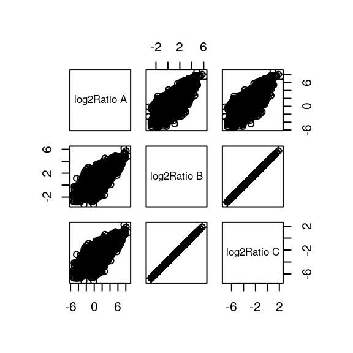

3 CLASE 3 - Exploración y transformación de estructuras de datos en R
library("tidyverse") # Muchas cosas cool
# Incluidas en tidyverse, en caso de errores cargandolo
library("dplyr") # Manipulación de datos mediante gramatica propia
library("magrittr") # Operadores cañeria (pipes) %>%)
library("readr") # Traducción (pharsing) de archivos a una tibble
library("stringr") # Operadores consistentes para stringsLa función mutate() de dplyr permite crear nuevas variables manteniendo las ya existentes. Por ejemplo, sacando el promedio de dos variables u operaciones similares.
# Importando datos de un CSV
data.location <- "https://raw.githubusercontent.com/DeepenData/clases/2bd7d93d9f23b2fe3fc679ca44e40a286f292ffe/06_mutate_pipes_regex/data_oct_08_2020.csv"
sim.without.outliers <- read_csv(data.location) # Importa la data a "sim.without.outliers"3.1 Utilizando mutate para manipulación de datos
3.1.1 Accediendo a datos tabulados
La gramatica de R utiliza [] y $ para acceder a objetos dentro de una estructura de datos.
Con un dataframe como el sacado de un CSV, esto son las filas, columnas, celdas individuales, etc.
Dado que un dataframe puede contener dataframes, este modo de acceso puede ir varios niveles de profundidad
.
sim.without.outliers$1saca la primera como vectorsim.without.outliers[1]saca la columna 1sim.without.outliers[ ,c(1,6)]saca las columnas 1 y 6sim.without.outliers[ ,c(1:6)]saca las columnas de 1 a 6sim.without.outliers[ ,-c(1,6)]saca todas las columnas menos la 1 y 6sim.without.outliers[c(10:110) ,c(2:6)]saca las filas 10 a 110 (100 en total) de las columnas 2 a 6sim.without.outliers[[1]]Sacamos la columna 1 como vector
# Accediendo a data en un objeto
sim.without.outliers[c(10:200), -c(1:2)] %>% rowMeans()
sim.without.outliers["treatment_1"] / sim.without.outliers["treatment_2"] %>% log2() -> hola
sim.without.outliers$nueva_columna <- hola # Llena la columna con "hola"
sim.without.outliers$nueva_columna <- NULL # Elimina una columnaPara trabajar con columnas en un dataframe, usamos dplyr::mutate(). Esto crea una nueva columna a partir de existentes, preservando las originales.
# Modificando la tabla con mutate() para calcular el Fold-change (log2/log2)
sim.without.outliers %>% # Tirando data por la cañeria
# Hace un promedio de las columnas TREAT(MENT)
mutate(`Mean treatment` = rowMeans(select(., starts_with("treat")))) %>%
# Hace un promedio de las columnas CONTROL
mutate(`Mean control` = rowMeans(select(., starts_with("control")))) %>%
# Calcula el fold-change de TRATAMIENTO sobre CONTROL
mutate(`log2Ratio` = log2(.[["Mean treatment"]] / .[["Mean control"]])) -> mutated.sim3.1.2 Funciones personalizadas
Creamos funciones para evitar escribir miles de lineas de codigo cada vez que queremos repetir algo. Podemos agruparlas y hacer una libreria para proyectos grandes, donde reutilizamos las funciones, o para recursiones.
Es importante considerar que las funciones son para cosas con un comportamiento predecible, e idealmente estable. Para analisis de datos, usualmente tenemos que limpiar los datasets, para tener una estructura “estándar” que nuestras funciones acepten, e idealmente definir un comportamiento de error para las funciones.
# Creamos funciones personalizadas para reutilizar codigo
# Aumenta por el cambio +- fracción del cambio. Es decir 3 +- 0.3 (2.7-3.3)
an.increase <- function(x, change = 3, fraction = .1) {
runif(1, min = (change * x - fraction * (change * x)), max = (change * x + fraction * (change * x)))
}
# Disminuye por el cambio +- fracción del cambio. Es decir 0.2 +- 0.1 (0.1-0.3)
a.decrease <- function(x, change = .2, fraction = .1) {
runif(1, min = (change * x - fraction * (change * x)), max = (change * x + fraction * (change * x)))
}Podemos crear una función para el pipeline más complejo que hicimos para el calculo del fold-change.
generate_mean_log2Ratio <- function(x, a.letter) {
x %>%
mutate(`Mean treatment` = rowMeans(select(., starts_with("treat")))) %>%
mutate(`Mean control` = rowMeans(select(., starts_with("control")))) %>%
mutate(log2Ratio = log2(.[["Mean treatment"]] / .[["Mean control"]])) %>%
# Les añadiremos un identidicador al final, por """motivos""" (ver luego)
rename_at(vars(matches("^treat|^contr|^mean|log2", ignore.case = TRUE)), funs(paste0(., a.letter)))
}# Generando sets para correlaciones
sim.without.outliers %>%
generate_mean_log2Ratio(" A") -> A # Calcula el fold-change inicial sin cambios
sim.without.outliers %>%
mutate(across(starts_with("treatment"), an.increase)) %>%
generate_mean_log2Ratio(" B") -> B # Fold-change aumenta 1.4-1.7 veces
sim.without.outliers %>%
mutate(across(starts_with("treatment"), a.decrease)) %>%
generate_mean_log2Ratio(" C") -> C # Fold-change disminuye -3.3 - -1.7 veces
# Creando el dataset final
cbind(
A, # Parte con la data A
select(B, matches("tre|con|log")), # Añade columnas de B
select(C, matches("tre|con|log"))
) -> final.data # Añade columnas de C y guarda## name ID treatment_1 A treatment_2 A treatment_3 A control_1 A control_2 A
## 1 bg_1 1 98769372 55528721 216372415 70057879 314970404
## 2 bg_2 2 21576971 15703117 49743142 3431646477 735515564
## 3 bg_3 3 574350430 1537885240 8727327947 254444555 11764283
## 4 bg_4 4 20926171 47644294 88937903 599913422 43731828
## 5 bg_5 5 164374922 728256656 68959572 495906095 1510632311
## control_3 A Mean treatment A Mean control A log2Ratio A treatment_1 B
## 1 4478205827 123556836 1621078037 -3.713707 316166036
## 2 24453279 29007743 1397205107 -5.589962 316166036
## 3 53031820 3613187872 106413553 5.085518 316166036
## 4 297274234 52502790 313639828 -2.578643 316166036
## 5 417270587 320530383 807936331 -1.333780 316166036
## treatment_2 B treatment_3 B control_1 B control_2 B control_3 B
## 1 160418954 674477023 70057879 314970404 4478205827
## 2 160418954 674477023 3431646477 735515564 24453279
## 3 160418954 674477023 254444555 11764283 53031820
## 4 160418954 674477023 599913422 43731828 297274234
## 5 160418954 674477023 495906095 1510632311 417270587
## Mean treatment B Mean control B log2Ratio B treatment_1 C treatment_2 C
## 1 383687338 1621078037 -2.0789505 19514913 10216199
## 2 383687338 1397205107 -1.8645408 19514913 10216199
## 3 383687338 106413553 1.8502493 19514913 10216199
## 4 383687338 313639828 0.2908224 19514913 10216199
## 5 383687338 807936331 -1.0743105 19514913 10216199
## treatment_3 C control_1 C control_2 C control_3 C Mean treatment C
## 1 39985290 70057879 314970404 4478205827 23238801
## 2 39985290 3431646477 735515564 24453279 23238801
## 3 39985290 254444555 11764283 53031820 23238801
## 4 39985290 599913422 43731828 297274234 23238801
## 5 39985290 495906095 1510632311 417270587 23238801
## Mean control C log2Ratio C
## 1 1621078037 -6.124274
## 2 1397205107 -5.909864
## 3 106413553 -2.195074
## 4 313639828 -3.754501
## 5 807936331 -5.1196343.2 Pipes complicadas
3.2.1 Tipos de Pipes
Las funciones de pipes vienen mejor definidas en magrittr.
R no incluye pipes en base.
%>%la pipe tradicional que conocemos y amamos; pasa un obejeto a la entrada de la función
%$%permite pasar adicionalmente los nombres del objeto
%<>%pipe bidireccional, que sirve para modificar el objeto de la entrada
%T%una tee, que permite sacar muestras del pipeline, o derivar a otros pipes
final.data %$% name %>%
head() # Sin head el output es de 3300 cosas## [1] "bg_1" "bg_2" "bg_3" "bg_4" "bg_5" "bg_6"final.data %$% cor(`log2Ratio A`, `log2Ratio B`) # Correlación entre A y B## [1] 0.7043315final.data %$% cbind(`log2Ratio A`, `log2Ratio B`, `log2Ratio C`) %>% colSums() -> my.col.sum
my.col.sum %>% subset(. > 0) -> my.col.sum
my.col.sum %<>% subset(. > 0) # Pipe bidireccional util para actualizar cosas
final.data %>% select(matches("log2")) %T>% plot() %>% # %T% permite sacar "muestras" del pipe
select(matches("B|C")) -> my.cols
3.2.2 Usando sistemas de identificadores
# Esto crea las descripciones del sistema o como estan descritas
# Molestias de los datos ómicos
my.terms <- c("system 1", "system 2.7.9", "subsystem A", "subsystem B and A") # Sistemas super-sistemicos
sample(my.terms, nrow(final.data) / 2, replace = T) -> terms.col # Genera una columna de terminos de 1650 lineas .
sample(final.data$name, nrow(final.data) / 2, replace = F) -> names.sample # saca 1650 nombres sin duplicados, para una tabla donde habran termiminos para sistemas de identificadores
data.frame(terms.col, names.sample) -> my.info # hacemos una tabla con datos de multiples funciones
inner_join(final.data, my.info, by = c("name" = "names.sample")) -> final.data.with.terms # elimina los datos que no tienen los terminos de sistemas que usamos
full_join(final.data, my.info, by = c("name" = "names.sample")) -> final.data.with.terms.nas # terminos en que algunos tienen descriptores y otros no3.2.3 Filtrado de filas
final.data.with.terms.nas %>% # Nuestra data media sucia sin los nombres sistemicos
filter(`log2Ratio A` < 0 & `log2Ratio B` < 0 & `log2Ratio C` < 0) %>% # TODO: porque no funciona con "?
drop_na() # Elimina todas las filas con NA
# CHUNK SIN OUTPUT3.3 Expresiones regulares
Las expresiones regulares, regex, son (generalizadamente) patrones de texto que definen un criterio de busqeda en un string.
Por ejemplo, a... se referiria a cualquier string que sea “a” seguido por tres caracteres, como “aaaa,” “a123,” “a,” etc.
Diversos lenguajes usan distintas gramaticas de regex, pero en general usan los mismos comodines y expresiones base.
R incluye paquetes base que usan regex, pero stringr tiene funciones más detalladas.
Sitios como regex101 permiten testear y analizar expresiones regulares.
# Detectando un patron
final.data.with.terms.nas %>%
.[["name"]] %>%
str_detect("DE") %>% # Detecta si hay o no, tira un vectro booleano
which() # Tira una lista de las columnas donde es str_detect es TRUE
# TODO: que hacia any()?final.data.with.terms.nas %>%
.[["name"]] %>%
str_detect("DE") %>%
any()## [1] TRUEfinal.data.with.terms.nas %>%
.[["name"]] %>%
str_extract("DE.\\d+") %>%
.[!is.na(.)]
# CHUNK SIN OUTPUT# Detección de patrones algo más avanzada
final.data.with.terms.nas %>%
.[["name"]] %>%
str_extract("[aA-zZ]E.1\\d$") %>%
.[!is.na(.)]## [1] "DE_10" "DE_11" "DE_12" "DE_13" "DE_14" "DE_15" "DE_16" "DE_17" "DE_18"
## [10] "DE_19"final.data.with.terms.nas %>%
.[["name"]] %>%
str_extract("[aA-zZ]E.1\\d+") %>%
.[!is.na(.)]## [1] "DE_10" "DE_11" "DE_12" "DE_13" "DE_14" "DE_15" "DE_16" "DE_17"
## [9] "DE_18" "DE_19" "DE_100" "DE_101" "DE_102" "DE_103" "DE_104" "DE_105"
## [17] "DE_106" "DE_107" "DE_108" "DE_109" "DE_110" "DE_111" "DE_112" "DE_113"
## [25] "DE_114" "DE_115" "DE_116" "DE_117" "DE_118" "DE_119" "DE_120" "DE_121"
## [33] "DE_122" "DE_123" "DE_124" "DE_125" "DE_126" "DE_127" "DE_128" "DE_129"
## [41] "DE_130" "DE_131" "DE_132" "DE_133" "DE_134" "DE_135" "DE_136" "DE_137"
## [49] "DE_138" "DE_139" "DE_140" "DE_141" "DE_142" "DE_143" "DE_144" "DE_145"
## [57] "DE_146" "DE_147" "DE_148" "DE_149" "DE_150" "DE_151" "DE_152" "DE_153"
## [65] "DE_154" "DE_155" "DE_156" "DE_157" "DE_158" "DE_159" "DE_160" "DE_161"
## [73] "DE_162" "DE_163" "DE_164" "DE_165" "DE_166" "DE_167" "DE_168" "DE_169"
## [81] "DE_170" "DE_171" "DE_172" "DE_173" "DE_174" "DE_175" "DE_176" "DE_177"
## [89] "DE_178" "DE_179" "DE_180" "DE_181" "DE_182" "DE_183" "DE_184" "DE_185"
## [97] "DE_186" "DE_187" "DE_188" "DE_189" "DE_190" "DE_191" "DE_192" "DE_193"
## [105] "DE_194" "DE_195" "DE_196" "DE_197" "DE_198" "DE_199"final.data.with.terms.nas %>%
.[["name"]] %>%
str_extract("[aA-zZ]E.1\\d.+") %>%
.[!is.na(.)]
# CHUNK SIN OUTPUTfinal.data.with.terms.nas %>%
.[["terms.col"]] %>%
str_extract("^s.*m") %>%
na.exclude() %>% # Es como lo de arriba, pero tira más cosas. Puede ser incomodo
sample(10) %>%
unique()
# CHUNK SIN OUTPUT# Reemplazo de patrones (subsystem -> comparment) # TODO: compartment?
final.data.with.terms.nas %>%
.[["terms.col"]] %>%
str_replace("subsyst.*", "comparment") %>%
na.exclude() %>%
sample(10)## [1] "comparment" "comparment" "system 2.7.9" "comparment" "system 2.7.9"
## [6] "comparment" "system 1" "system 2.7.9" "system 1" "comparment"3.4 Workflow de la vida real
final.data.with.terms.nas %>%
filter(str_detect(
name, # en la columna "name"
regex("de.*", # Busca "de*"
ignore_case = T
)
) & # sin diferencias Minuscula/Mayuscula
str_detect(
terms.col, # Busca en la columna "term.cols"
regex("B.*A", ignore_case = F)
)) # ...terminos que empiezan con B y terminan en A
# CHUNK SIN OUTPUTfinal.data.with.terms.nas %>%
filter(str_detect(
name, # en la columna "name"
regex("de.*", # ... el patrón "de*"
ignore_case = T
)
) & # sin diferencias Minuscula/Mayuscula
str_detect(
terms.col, # en la columna "term.cols"
regex("\\d.\\d", # ... el patrón "\\d.\\d"
ignore_case = F
)
) & # sin diferencias Minuscula/Mayuscula
`log2Ratio C` < 0) %>% # Y el fold-change es menor a 0
select(matches("log|name|term"))## name log2Ratio A log2Ratio B log2Ratio C terms.col
## 1 DE_3 2.60975820 1.40948211 -2.63584153 system 2.7.9
## 2 DE_5 2.19261554 1.73652624 -2.30879739 system 2.7.9
## 3 DE_8 5.29485037 2.91601158 -1.12931205 system 2.7.9
## 4 DE_18 5.97886526 2.36037515 -1.68494848 system 2.7.9
## 5 DE_30 -0.84050767 -2.72593058 -6.77125421 system 2.7.9
## 6 DE_40 5.29281179 2.03350932 -2.01181432 system 2.7.9
## 7 DE_47 2.06194709 -0.50833714 -4.55366077 system 2.7.9
## 8 DE_50 0.93832520 -2.04235441 -6.08767804 system 2.7.9
## 9 DE_60 2.73800563 1.66818134 -2.37714229 system 2.7.9
## 10 DE_62 -0.87436390 -2.09331583 -6.13863946 system 2.7.9
## 11 DE_68 -0.09331807 -1.62616944 -5.67149307 system 2.7.9
## 12 DE_70 0.60076118 -2.27125260 -6.31657623 system 2.7.9
## 13 DE_80 1.43123237 -1.58069792 -5.62602155 system 2.7.9
## 14 DE_84 5.59155773 2.35497556 -1.69034807 system 2.7.9
## 15 DE_85 3.69637923 2.63193003 -1.41339360 system 2.7.9
## 16 DE_90 1.91008483 1.08977384 -2.95554979 system 2.7.9
## 17 DE_93 4.29039193 1.65915091 -2.38617272 system 2.7.9
## 18 DE_107 2.72766434 1.68406936 -2.36125427 system 2.7.9
## 19 DE_108 3.80469249 1.54034372 -2.50497991 system 2.7.9
## 20 DE_109 5.27261242 1.82938419 -2.21593944 system 2.7.9
## 21 DE_112 3.49934378 1.49219956 -2.55312407 system 2.7.9
## 22 DE_119 0.80244815 0.13296414 -3.91235949 system 2.7.9
## 23 DE_122 -0.62781881 -1.71214102 -5.75746466 system 2.7.9
## 24 DE_128 4.21464660 2.54203299 -1.50329064 system 2.7.9
## 25 DE_152 4.61256373 1.84575751 -2.19956612 system 2.7.9
## 26 DE_154 5.07855305 2.14288725 -1.90243638 system 2.7.9
## 27 DE_157 4.39544279 1.57049245 -2.47483118 system 2.7.9
## 28 DE_166 6.43066722 3.13656272 -0.90876091 system 2.7.9
## 29 DE_169 1.77673083 -0.07409857 -4.11942220 system 2.7.9
## 30 DE_179 3.65876128 0.84725112 -3.19807251 system 2.7.9
## 31 DE_188 4.36918589 1.67031793 -2.37500570 system 2.7.9
## 32 DE_194 5.35465006 2.88198162 -1.16334201 system 2.7.9
## 33 DE_200 4.52669804 3.23578488 -0.80953875 system 2.7.9
## 34 DE_201 2.29450580 1.50469437 -2.54062926 system 2.7.9
## 35 DE_209 4.51490260 2.38535187 -1.65997176 system 2.7.9
## 36 DE_227 4.65981873 1.56505327 -2.48027036 system 2.7.9
## 37 DE_232 4.27065106 1.75967964 -2.28564399 system 2.7.9
## 38 DE_254 6.10902777 3.96985019 -0.07547344 system 2.7.9
## 39 DE_257 4.69191607 3.47382466 -0.57149897 system 2.7.9
## 40 DE_258 3.67338989 3.48734403 -0.55797960 system 2.7.9
## 41 DE_260 6.55700077 3.97428798 -0.07103566 system 2.7.9
## 42 DE_276 1.56721271 3.21937347 -0.82595016 system 2.7.9%in%permite detectar si un elemento esta en un objeto. Devuelve TRUE/FALSE.
Puede usarse como un complemento de los comparadores==,>,<=en sentenciasif(){}
if (T) {"ok"}## [1] "ok"if (F) {"ok"}
if ("system 2.7.9" %in% final.data.with.terms.nas$terms.col) {"ok"}## [1] "ok"# "system 2.7.9" está en "final.data..." así que TRUE -> 'ok'
final.data.with.terms.nas %>%
{
if ("system 2.7.9" %in% final.data.with.terms.nas$terms.col) print("ok") else str_extract(.[["terms.col"]], "system.*")
} %>%
na.omit() %>%
unique() -> unicos## [1] "ok"mis.datos <- list(final.data.with.terms.nas, unicos, c(1, 2, 4, 5, 5, NA))